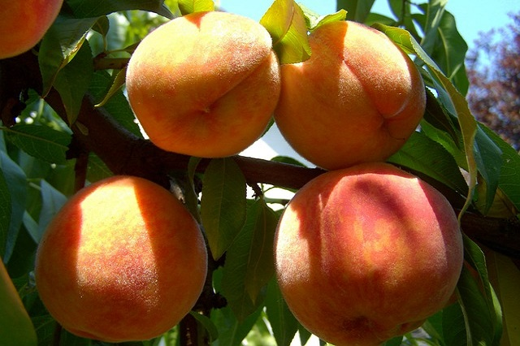
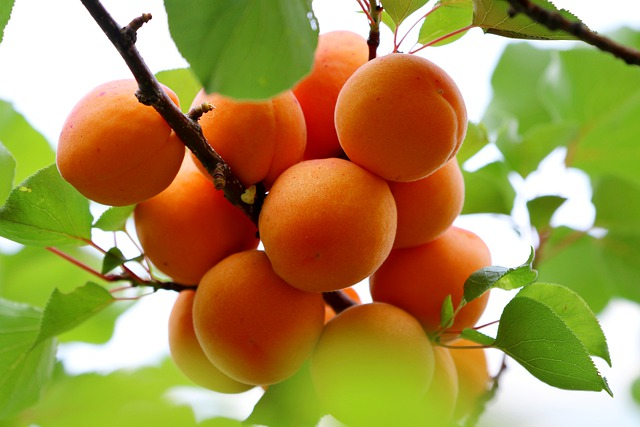
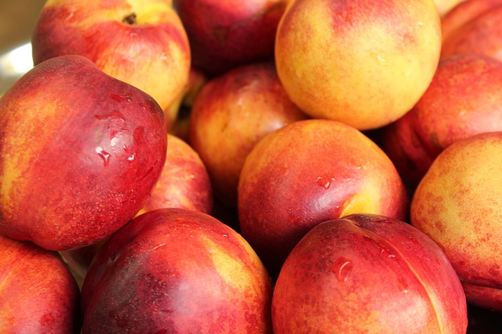
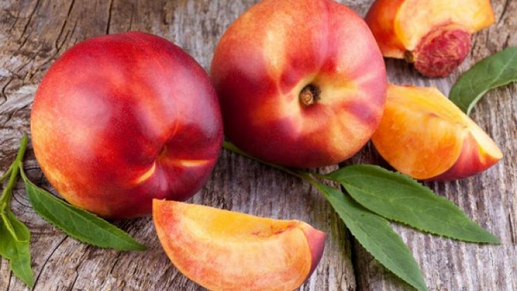

Barackok
Barackon belül megkülönböztetünk őszi-, sárgabarackot és nektarint, más néven kopasz barackot.
Őszibarackon belül a hússzín alapján két típust különböztetünk meg:
- Az első csoportba tartoznak a sárga húsúak, melyek általában édesebbek, magasabb cukortartalmúak, könnyebben szállíthatóak.
- A másik csoportba tartoznak a fehér húsúak, melyek lédúsak, zamatosak, fűszeresek, de érzékenyebbek a nyomódásra.
Megkülönböztethetünk még magvaváló és duránci, azaz maghoz kötött fajtákat. A korai fajták még nem magvaválóak, ezek friss fogyasztásra alkalmasak, míg a későbbi, nagyobb termésűek már magvaválóak, ezekből készülnek a legfinomabb befőttek.
A sárgabarack, más néven kajszibarack felhasználásában vezet a gyümölcsök között. A hazai földeken termesztett gyümölcsök íze páratlan, főleg a belőle készült sok finomság.

Sárgabarack

Nektarin
Őszibarack
Az őszibarack vagy őszibarackfa (Prunus persica) a rózsafélék (Rosaceae) családjába és a Prunus nemzetségbe tartozó gyümölcsfa. Legközelebbi rokona a mandula, távolabbi rokonai a szilva és a kajszibarack.
A magyar nyelvben „őszibarack” néven említjük összes termesztett és magról kelt változatát, de a kényesebb, általában késői külföldi fajták „francia barack” néven is ismertek. Voltaképpen mindkét elnevezés helytelen, mert nem „őszi”, hiszen a fajtától függően nyár közepétől érik, és nem is „francia”, mert a jelenleg is termesztett fajták nagyon sok országból: Olaszországból, Oroszországból, Kínából, az USA tagállamaiból (Illinois, Texas) és Kanadából származnak.
Helyes elnevezése csak a barack lenne, ami azért okoz némi bonyodalmat, mert a kajszibarackot is értjük rajta. A sima héjú (nem molyhos) őszibarackot nektarin névvel különböztetjük meg, de nagyon sokan használják a "kopasz barack" elnevezést is.
További információ| 100 g őszibarack | |
|---|---|
| Megnevezés | Érték |
| A-vitamin | 1330 NE |
| B1-vitamin | 0,02 mg |
| B2-vitamin | 0,05 mg |
| C-vitamin | 7,00 mg |
| Kalcium | 8,00 mg |
| Foszfor | 19,00 mg |
| Nátrium | 1,14 mg |
| Kálium | 200,00 mg |
| Magnézium | 9,00 mg |
| Egyéb fém | 0, 5 mg |
| Energiatartalma | 38 kcl |
Sárgabarack
A kajszi, kajszibarack vagy sárgabarack (latinul: Prunus armeniaca) egy Közép-Ázsiából vagy Kínából származó gyümölcsfa. A szilvának közeli, az őszibaracknak és a mandulának távolabbi rokona.
Az Európai Unióban 65 000 hektáron termesztik és az éves termésmennyiség 700 000 tonna. Magyarországon évente 30 000 tonna kajszibarackot termelnek, de hideg időjárás vagy a virágzáskor jelentkező fagyok esetén ez visszaeshet 10 000 tonnára, mint például 2018-ban.
A barack szó a magyar nyelvben egyaránt vonatkozik a Prunus persica és a Prunus armeniaca fajtáira. A kajszibarack esetében az őszibaracktól való megkülönböztetés érdekében került a szó elejére a "kajszi" (esetleg "sárga") előtag.
További információNektarin
A nektarin fa többféle módon ismert, így pl. kopasz barack, sima héjú barack néven. A szilva és az őszibarack kereszteződése hozta meg ezt az új, nagyon finom gyümölcsöt. A nektarin a barack egyik alfaja, mely önmagában is egy vitaminbomba. Az őszibarackkal ellentétben, mely finoman molyhos, addig a nektarin héja teljesen sima, ezért is nevezzük másnéven kopasz baracknak. Talán ennek is köszönhető, hogy a gyermekek nagy kedvencévé vált.
A szőrösség tulajdonságát egy domináns allél hordozza, ennek teljes hiányában kopasz a barack.[2] Már Darwin is foglalkozott a nektarin mibenlétének problémájával, és az ő nyomában számos más kutató is.
Az utóbbi években az Egyesült Államokban továbbnemesítették, és így lendült fel kereskedelmi forgalma.
A kopasz barack fa talajtípusban nem válogat, de minőségében a tápanyagban dús, jó vízelvezetésű talajt kedveli.